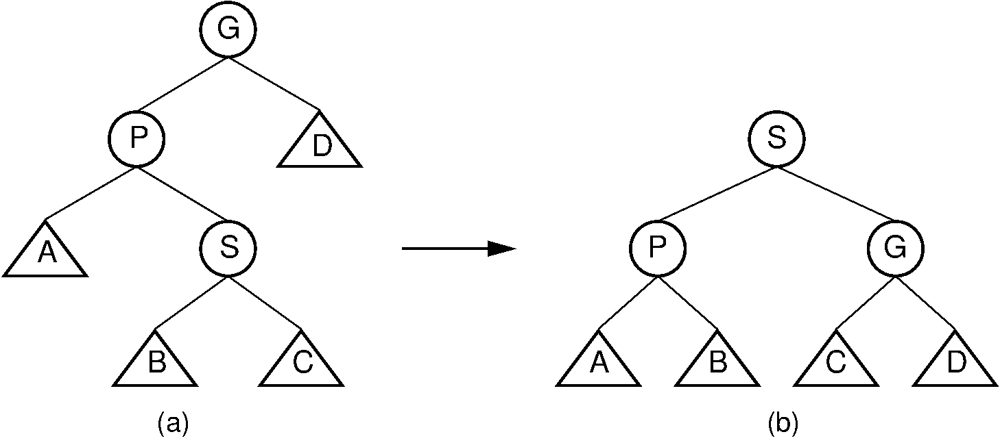

Filtering
 This is my implementation of Gaussian, Bilateral, and Joing
Bilateral Filtering written in C++.
This is my implementation of Gaussian, Bilateral, and Joing
Bilateral Filtering written in C++.
You can find the source codes here.
Splay Tree

This is my implementation of Splay Tree in C++.
You can find the source codes here.